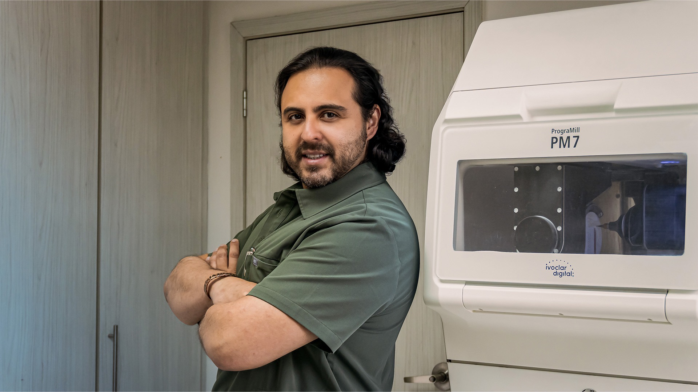
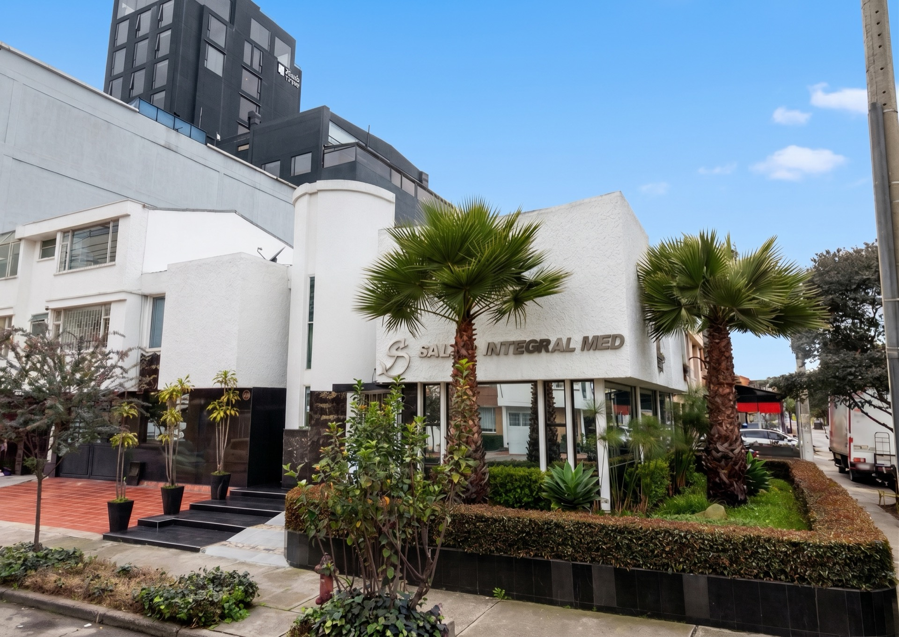
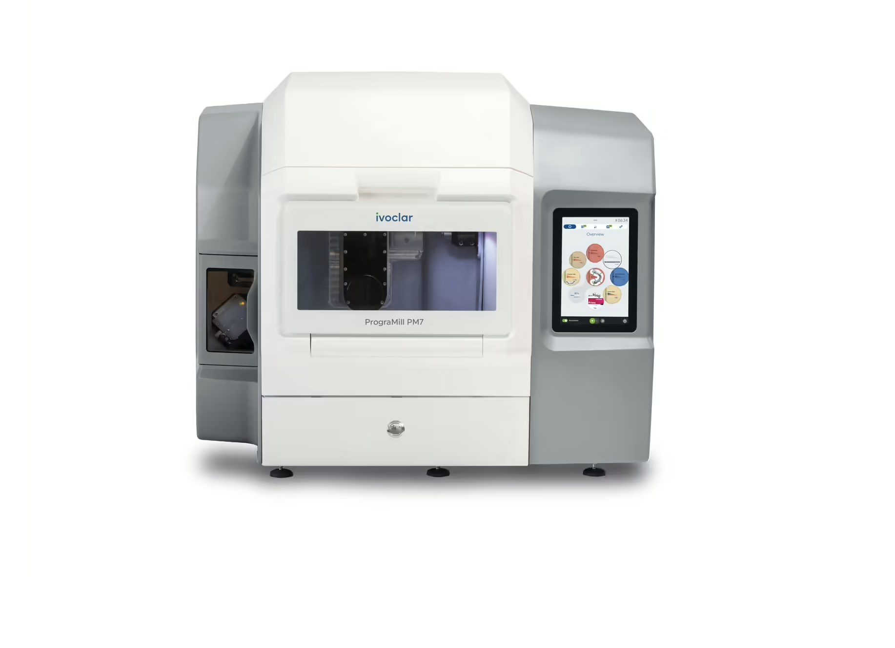
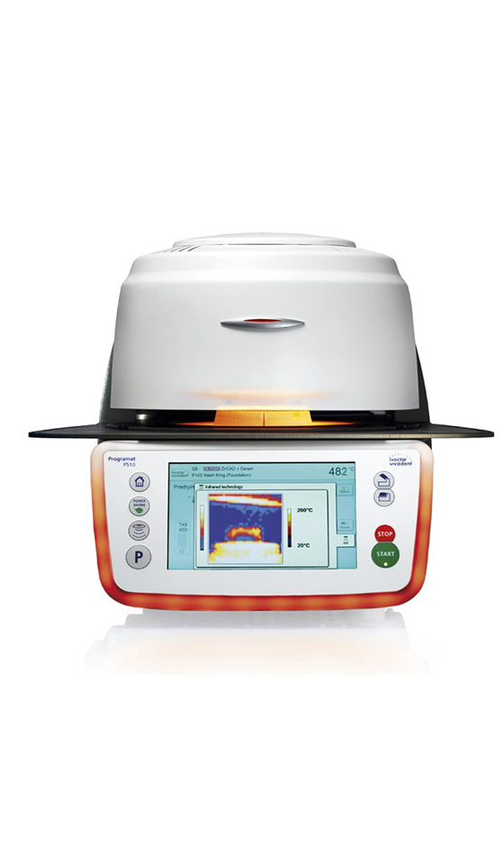
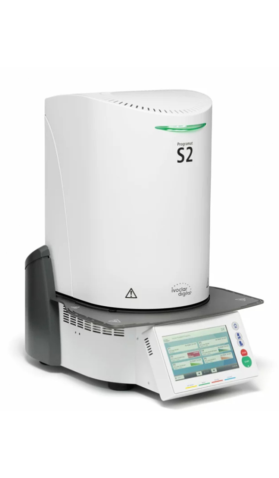

Diseño de Sonrisa Digital (DSD)
Planificación digital 3D con software DSD para visualizar su sonrisa ideal antes de iniciar cualquier tratamiento. Resultado predecible y garantizado desde la primera consulta.
ConsultarDesde 1987, SIMEB construye salud oral con rigor clínico, tecnología de vanguardia y materiales de clase mundial. La sonrisa que obtienes no es el objetivo, es la consecuencia de un trabajo impecable.

Bogotá es uno de los destinos de turismo dental más reconocidos de Latinoamérica. Nuestros pacientes acceden a tratamientos de excelencia global: diseño de sonrisa, implantes y carillas, a una fracción del costo en EE.UU. o Europa.
Cada tratamiento parte de un diagnóstico clínico riguroso. La función, la oclusión y la salud oral son la base. La estética que obtienes es el reflejo de un trabajo bien hecho, no un fin en sí mismo. Materiales de clase mundial: porcelana feldespática, titanio grado médico y tecnología CAD/CAM.
Planificación digital 3D con software DSD para visualizar su sonrisa ideal antes de iniciar cualquier tratamiento. Resultado predecible y garantizado desde la primera consulta.
ConsultarLaminillas ultra-delgadas de porcelana feldespática que transforman el color, forma y tamaño de sus dientes sin tallar el esmalte. Resultados naturales e impecables con alta durabilidad.
ConsultarRestauración permanente de dientes perdidos con implantes de titanio grado médico de última generación. Prótesis fija con resultados naturales e indistinguibles, sin anestesia general. Solución definitiva para la salud oral.
ConsultarSistemas de blanqueamiento dental con activación LED o láser para lograr hasta 16 tonos de diferencia en una sola sesión. Resultados duraderos, sin sensibilidad y supervisados por un dentista especialista.
ConsultarAlineadores transparentes a medida para corregir la oclusión dental y alineación sin brackets metálicos. Tratamiento de ortodoncia estético, cómodo y removible para el profesional que cuida su imagen.
ConsultarRestauración integral de función masticatoria, oclusión dental y estética para pacientes con desgaste severo o pérdida múltiple de dientes. Planificación multidisciplinaria con coronas, prótesis fija e implantes de alta complejidad.
Consultar
"Recibí de mis padres una clínica con 38 años de historia y la responsabilidad de llevarla aún más lejos. Mi compromiso es honrar ese legado y superarlo cada día."
SIMEB nació en 1987 fundada por el Dr. Carlos Arturo Fajardo y la Dra. Marbeluz Escolar Borrero, dos odontólogos dedicados a la rehabilitación oral que construyeron una clínica basada en ética, profesionalismo y un equipo altamente calificado en especialidades odontológicas.
Hoy, el OD. Carlos Eduardo Fajardo Escolar, hijo de ambos fundadores, egresado de la Pontificia Universidad Javeriana y profesor activo de la Universidad El Bosque, lidera una nueva etapa de innovación, incorporando tecnología de vanguardia para llevar ese legado familiar a un nivel de excelencia mundial.
Agenda tu Primera Consulta
Egresado de la Pontificia Universidad Javeriana y profesor activo de la Universidad El Bosque, el OD. Carlos Fajardo combina una formación académica rigurosa con más de una década de práctica clínica de alto nivel.
Heredero del legado de SIMEB — clínica fundada en 1987 por sus padres — lidera hoy una nueva etapa de la institución con tecnología de vanguardia, un enfoque centrado en la función y una estética que es el resultado natural de un trabajo clínico impecable.
Cada detalle importa. Cada milímetro de su sonrisa es estudiado con la misma precisión con que un maestro artesano trabaja su obra. Este es nuestro compromiso con usted.
Equipos de última generación para diagnóstico, diseño y ejecución de tratamientos con precisión digital absoluta.
Su sonrisa es única. Cada tratamiento es diseñado a medida, considerando su anatomía facial, tono de piel y personalidad.
No entregamos resultados hasta que superan nuestros propios estándares. Su satisfacción es el único criterio de éxito.
Desde la consulta inicial hasta el seguimiento post-tratamiento, cada momento en nuestra clínica es diseñado para su comodidad y confianza.
Cada espacio de SIMEB está concebido para ofrecer al paciente comodidad, privacidad y la máxima confianza. Instalaciones de nivel internacional en el corazón de Bogotá.


Fresadora CAD/CAM de 5 ejes con precisión de ±5 µm. Fabrica coronas, carillas e inlays de IPS e.max el mismo día de la cita, sin laboratorio externo.

Escáner intraoral sin polvo con captura de color en tiempo real. Impresiones digitales ultra-precisas en segundos para un flujo de trabajo 100% digital.

Horno de sinterización y cristalización de IPS e.max con hasta 950 °C. Garantiza la resistencia, translucidez y estética final de cada restauración cerámica.

Horno de alta velocidad para sinterización de zirconia. Ciclos express sin comprometer densidad ni color, ideales para prótesis de máxima resistencia.
Cada caso de estética dental es el resultado de una planificación digital meticulosa, técnica clínica impecable y materiales de porcelana feldespática y cerámica de alta resistencia. Resultados reales de pacientes reales en Bogotá.
Carillas de porcelana · 10 dientes · 2 sesiones
Implantes dentales · Arco completo · All-on-4
Combinación de tratamientos · Resultado natural
El doctor Fajardo transformó completamente mi vida. Llegué con complejo por mis dientes y hoy sonrío en cada foto. El resultado supera todo lo que imaginé. Su equipo es extraordinario.
Viajé desde Miami específicamente para atenderme con el Dr. Fajardo. Su reputación es completamente merecida. Profesionalismo, tecnología y resultados de clase mundial. Repetiría sin duda.
La atención es simplemente impecable. El doctor explica cada paso, usa tecnología que no había visto en ningún otro lugar y el resultado fue exactamente lo que habíamos planeado en el diseño digital.
El costo varía según el tratamiento requerido: número de carillas, tipo de material y complejidad del caso. En nuestra clínica odontológica realizamos una consulta de diagnóstico donde el OD. Fajardo evalúa su caso y presenta un plan de tratamiento personalizado con inversión clara y sin sorpresas.
Las carillas de porcelana feldespática requieren entre 2 y 3 sesiones: diagnóstico y diseño digital de sonrisa, preparación dental e impresión intraoral, y cementación definitiva. Con nuestra tecnología CAD/CAM algunos casos pueden resolverse en menos tiempo sin sacrificar calidad.
Los implantes de titanio grado médico, correctamente colocados y con higiene adecuada, pueden durar toda la vida. La corona o prótesis fija sobre el implante puede necesitar reemplazo en 15 a 20 años según el desgaste. Utilizamos marcas con respaldo clínico internacional comprobado.
El blanqueamiento dental profesional usa concentraciones controladas de peróxido activadas con luz LED o láser, logrando hasta 16 tonos en una sesión. El casero es más lento, menos predecible y puede causar sensibilidad dental sin supervisión de un dentista especialista.
Sí, atendemos pacientes de más de 15 países. Bogotá es un destino de turismo dental reconocido por su calidad y costos competitivos. Coordinamos diagnóstico previo virtual, agenda de citas concentradas para optimizar su viaje, y seguimiento post-tratamiento remoto.
En nuestra clínica odontológica aplicamos protocolos de anestesia local de última generación para garantizar procedimientos sin dolor. La mayoría de tratamientos estéticos como carillas y blanqueamiento son completamente indoloros. Para implantes y cirugías, el protocolo anestésico asegura su total comodidad durante y después del procedimiento.
Da el primer paso hacia una salud oral de excelencia. El OD. Carlos Fajardo realiza un diagnóstico clínico completo — función, oclusión y estructura — y diseña un plan de tratamiento personalizado. La sonrisa que obtienes es la consecuencia de hacerlo bien. Cupos limitados para garantizar atención personalizada.